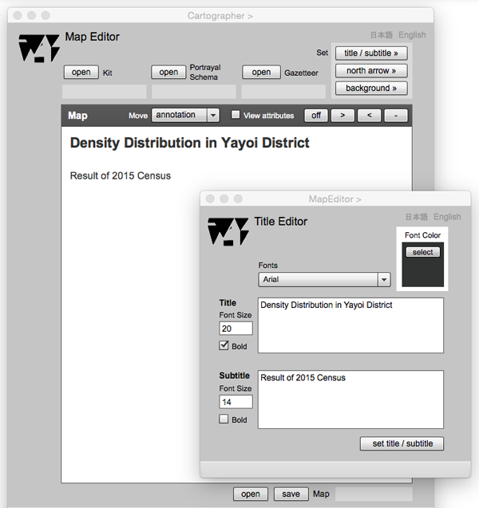

Title Editor
Introduction
Title Editor is for the design of title and subtitle. Title of a map should be a short phrase to represent the theme of the mapping. Title should be considered carefully as it is an important element of a map. Subtitle is optional but it is used to express the content, publisher, and complement informations. Both title and subtitle should be a short phase that terminated by noun or pronoun.
Title Editor

FIELDS
Font Color
The color sample is displayed by the selection on the color selecter page.
Fonts (selectable)
A font type can be selected on the dropdown list.
Title (editable)
Key-in the title in this area.
Font Size (Title )(editable)
Key-in the size of the font.
Subtitle (editable)
Key-in the subtitle in this area.
Font Size (Subtitle) (editable)
Key-in the size of the font.
BUTTONS
select
The font color can be selected on the Color Selector dispalyed by clicking this button.
Bold (Title)
Check this check box to make font BOLD.
Bold (Subtitle)
Check this check box to make font BOLD.
set title / subtitle
Title and subtitle are displayed on Map Editor by chicking this button. The positions can be translated on the screen of Map Editor.
日本語
今あなたが読んでいるドキュメントが表示されます．
English
You can read the tutorial written in English.